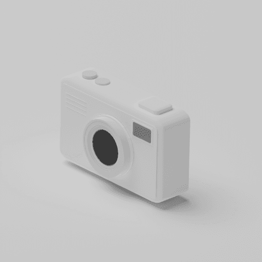
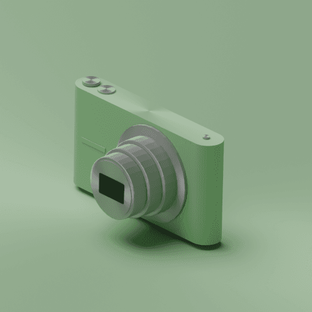
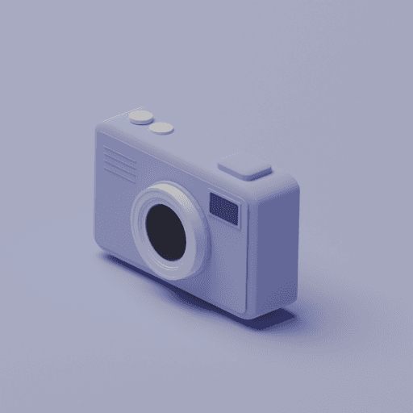
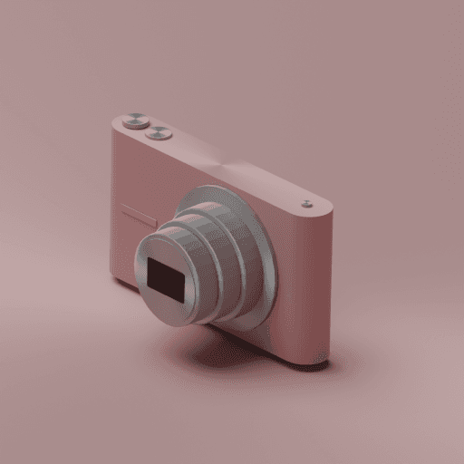

カメラの種類
SNPITのカメラは大きく2種類に分かれます。
- フリーカメラ - 無料でもらえる。FREEとLIMITEDの2種類。撮影でFPを獲得
- NFTカメラ - 購入が必要。5段階のレアリティ。撮影でSTPを獲得
フリーカメラでもレベルを上げてQuality30に到達すれば、メインバトルに参加してSTPを稼げます。
NFTカメラ レアリティ比較
レアリティが高いほど初期ステータスが高く、レベルアップ時のポイント付与も多くなります。
| 項目 | Common | Uncommon | Rare | Epic | Legendary |
|---|---|---|---|---|---|
| 初期ステータス合計 | 4～40 | 32～72 | 60～100 | 92～132 | 120～160 |
| Lv UP獲得Pt | 2pt | 4pt | 6pt | 8pt | 10pt |
| 修理コスト(STP) | 200 | 400 | 600 | 800 | 1,000 |
| 最大Lv | 31 | 31 | 31 | 31 | 31 |
フリーカメラ vs NFTカメラ
フリーカメラとNFTカメラの違いをまとめました。
| 項目 | フリーカメラ(FREE) | フリーカメラ(LIMITED) | NFTカメラ(Common) |
|---|---|---|---|
| 入手方法 | 初期配布 | 期間限定配布 | 購入（マーケット） |
| 獲得通貨 | FP | FP | STP |
| レベルアップ費用 | FP | FP | STP |
| Lv UP獲得Pt | 2pt | 2pt | 2pt |
| ブーストクーラー | 使用不可 | 使用不可 | 使用可能 |
| ミント | 不可 | 不可 | 可能 |
| 投票参加 | 可能 | 可能 | 可能 |
| メインバトル | Q30達成で可 | Q30達成で可 | Q30達成で可 |
故障と修理コスト
200枚以上撮影するとカメラが故障するリスクがあります。Battery値を上げると故障率が下がります。
| 撮影枚数 | 故障確率 |
|---|---|
| 1～200枚 | 0%（安全） |
| 201～300枚 | 0.3% |
| 301～400枚 | 1% |
| 401枚以上 | 3% |
故障すると、そのカメラを使用した写真撮影・ミントができなくなります。早めの修理がおすすめです。
どのカメラを選ぶべき？
- 完全無課金 → フリーカメラでOK。Q30まで上げればメインバトルも参加可能
- 少額課金 → Commonカメラ1台。STPを直接獲得できる
- 本格課金 → Uncommon以上。初期ステータスが高く、レベルアップ効率も良い
- フィルム上限を増やしたい → カメラの台数を増やす（レベルアップでは増えない）
もっと詳しく聞きたい？
スナピーに聞く
SNPITのこと、何でも答えるよ！
›